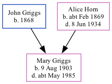

Mary Ann Griggs 1903 - c1985
[ Home ] | [ Calendar ] | [ Surnames Index ] | [ Family History ]A domestic servant and the 7th of 8 children of John Griggs (a general laborer) and Alice HornMary Griggs, the second cousin twice-removed on the father's side of Nigel Horne, was born in Margate, Kent, England on Aug 9, 19031,2,3,4.
Throughout her life, she lived at 103 Milton Road in Margate on Apr 2, 19111; and at 6 Avenue Gardens in Margate on Sep 29, 19392.
She died c. May 1985 in Thanet, Kent, England4.
Parents
- John Edward was born in 1868
- Alice Clara was born c. Feb 1869
Citations
- 1911 Census for England & Wales - Findmypast (was age 7 and the daughter of the head of the household)
- 1939 Register - Findmypast (was recorded at this address)
- England & Wales births 1837-2006 - Findmypast
- England & Wales deaths 1837-2007 - Findmypast
Media
England & Wales births 1837-2006 - BMD/B/1903/3/AZ/000250/030
1939 Register - TNA/R39/1757/1757D/016/26
England & Wales deaths 1837-2007 - BMD/D/1985/4/74941237
Family Tree
Generated by ged2site. Last updated on Nov 13, 2024